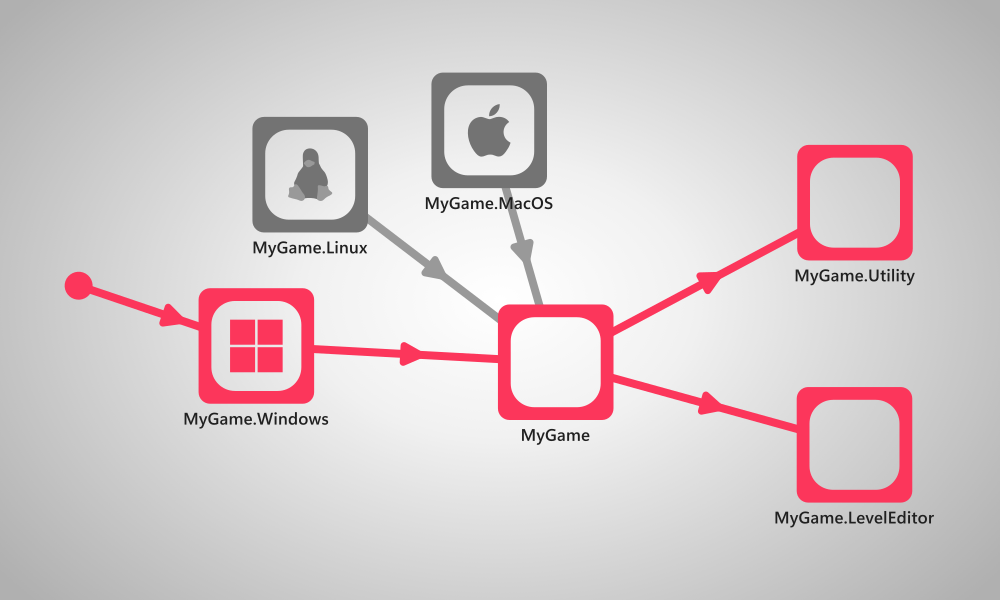
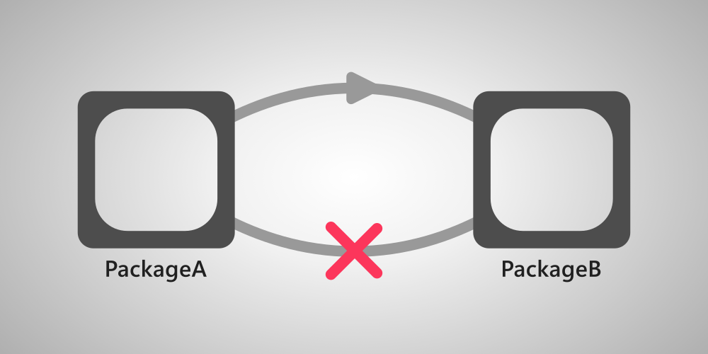
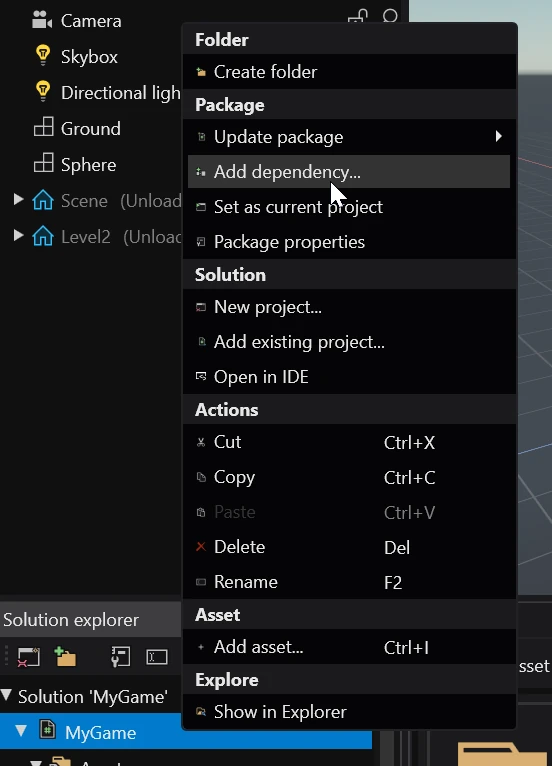
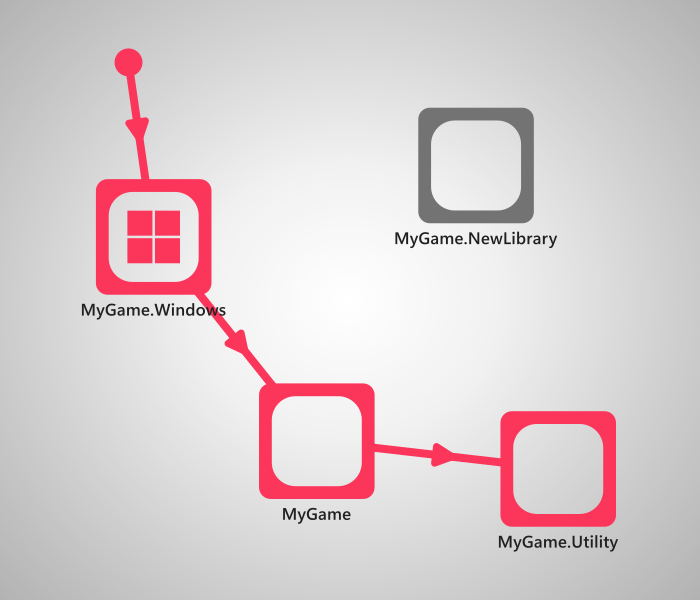
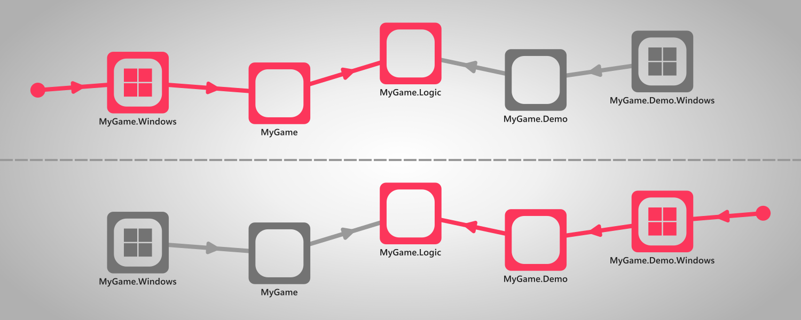

Dependencies
Intermediate
Project packages can depend on other packages in order to use their code and/or assets.
For .NET developers: a Stride project package is a standard C# project.

Packages cannot be co-dependent: if packageA has a dependency on packageB, packageB cannot have a dependency on packageA.

Add a dependency
You can add PackageA as a dependency of PackageB (PackageA will be used by PackageB) by right clicking PackageB in the Solution explorer panel and selecting Add dependency...

Unreferenced packages
It is possible to have project packages that aren't referenced by any of the platform packages nor their dependencies.

These packages will be ignored by the compiler and won't be included in the build. This is useful for creating special versions of your project that include additional content, or only include a portion of the game (like a demo).

Warning
If at least one of the project packages that are included in the build are using assets from an unreferenced package, Game Studio will fail to open and the game will fail to build.